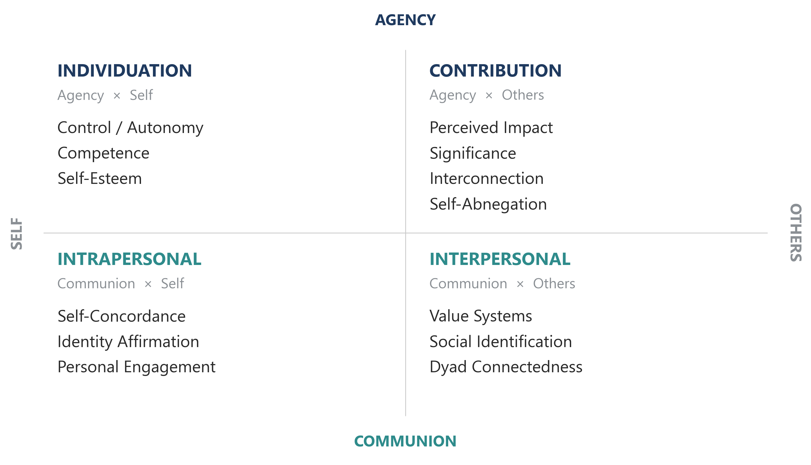
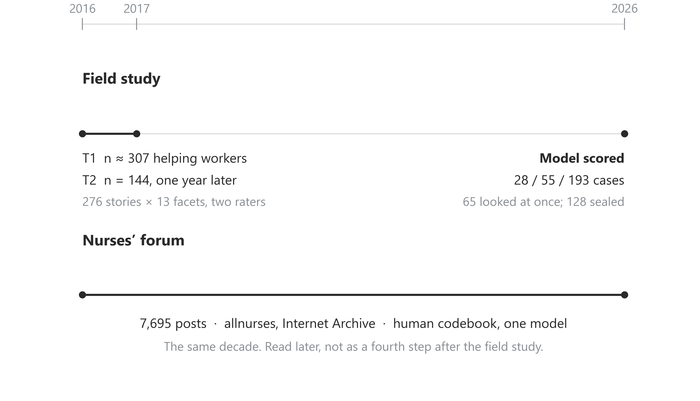
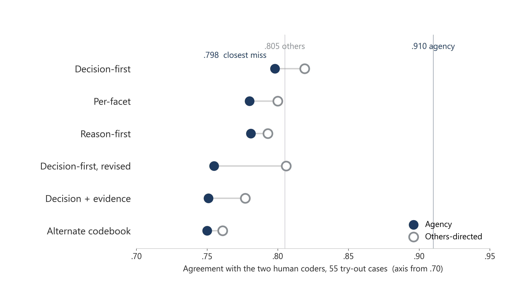
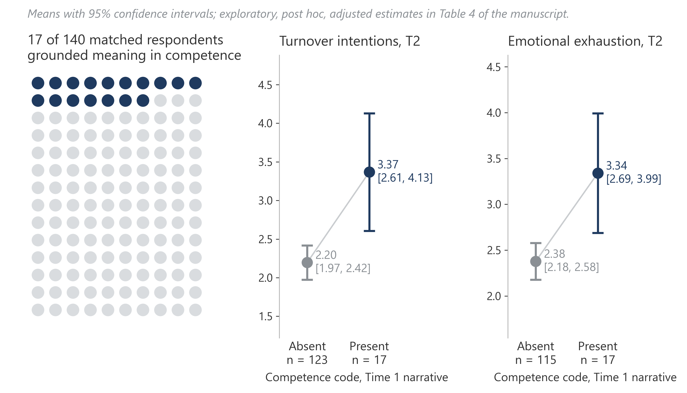
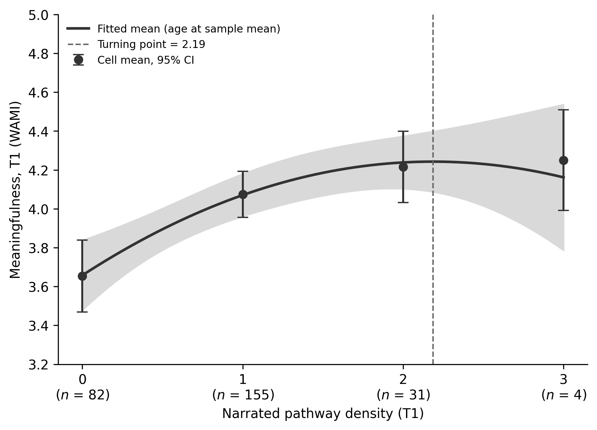
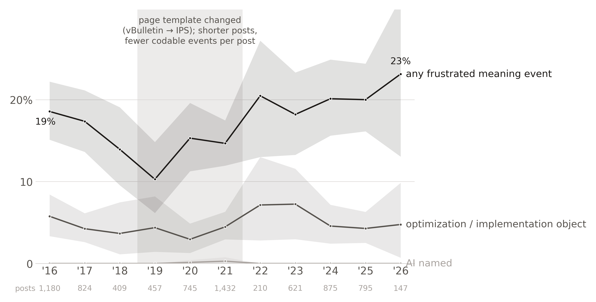
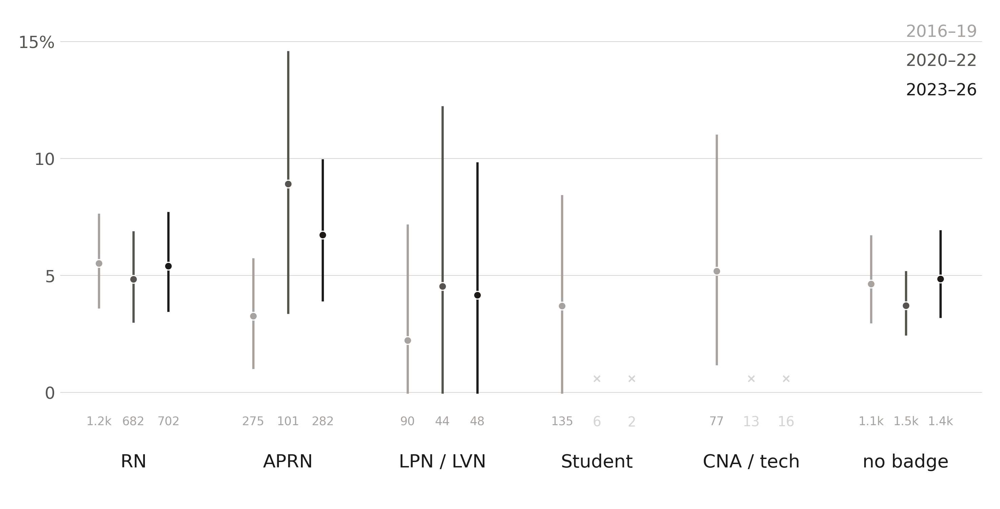

One sentence
If optimization removes the tasks through which people experience meaning, efficiency is paid for in strain and exit.
What we found
Organizations automate helping work on the promise that it frees people for the parts that matter. That promise assumes someone already knows which parts those are. We asked nurses, teachers, social workers, and counselors to tell us, in their own words, and measured the same people once more, about a year later. At that second measurement, the people who had located meaning in skill and mastery were more exhausted and more likely to be thinking about quitting; the result is exploratory, and it is the lead for the next study. That association is not a test of optimization: these people were not observed under an automation change. We then tested whether a language model could read those stories the way two trained coders do. Across six locked setups the best model agreed with the humans at .798 against a human standard of .910. We are reporting the miss, not working around it. Last, one trained model coded ten years of nurses’ forum posts with that same codebook: 7 mentions of AI in 7,709 posts, none since 2021. What nurses name, year after year, is ratios, metrics, and charting, and what rose over the decade was a sense of losing control over how the work gets done.
The argument
Meaning is task-bound
Rosso, Dekas, and Wrzesniewski (2010) organize meaning as Agency–Communion crossed with Self–Others. Contribution and unification are two of those pathways. They are also the tasks now first in line for documentation, monitoring, and coordination tools.
More meaning is not always better
Calling-infused work can bind people to exhaustion (Bunderson & Thompson, 2009). Rosso and colleagues left open a curvilinear conjecture: too many active pathways may exhaust rather than sustain. A full reversal into strain is almost never identified. What this sample shows is flattening: Time 1 felt meaning rises from zero to two pathways and then levels.
Meaning can be measured at scale once the ceiling is known
People analytics will be asked to score meaning from text, and this study supplies the working method: find out how well two trained humans agree on each kind of meaning first, write the pass marks down and set aside a file of cases before any model is chosen, and accept a model only where it clears the mark. Agency and others-directed meaning already have ceilings high enough to test against; communion needs better human agreement before any model can be judged on it. That map is what turns text scoring at scale from a vendor claim into an auditable measurement.
The 2 × 2 we coded
Thirteen present/absent facets nest in four pathways. A pathway counts as present if any of its facets is. We do not score Rosso’s seven mechanisms as a middle layer; they cut across the 2 × 2. Color on the figure is the pathway: navy agency, teal communion, grey Self–Others.

The design
Time 1 (March 2016): critical-incident narratives and meaning surveys, helping-profession workers, healthcare-majority online panel, N ≈ 307. Time 2 (February–March 2017): felt meaningfulness, emotional exhaustion, and turnover intentions, n = 144 complete longitudinal cases. Two trained humans coded 276 stories on all 13 facets (3,614 cells). Disagreements went to blinded adjudication. Model instructions were written only on a practice slice of the stories and scored once on a try-out slice. After the paper’s results were fixed, one descriptive look at 65 of the set-aside cases was taken under rules written down beforehand (two setups that had already missed the mark; reported as a number on cases the models had never seen, not as validation); the remaining 128 cases stay untouched.

Finding 1. The human ceiling is not one number
How often the two coders agreed a kind of meaning was present when either saw it, with 95% intervals; n = 276 stories. Position on 0–1, not bar length.
Vendor claim: “we measure belonging from text at .90.” The human pair in this codebook does not reach that on communion. Ask which ceiling the product beat, on which dimension. Color is the pathway: navy agency, teal communion, grey Self–Others. Communion’s interval is the mark that matters.
Finding 2. None of six locked setups reached the agency bar
None of six locked setups reached the agency bar. Agency .750–.798 against .910. Highest .798 is .11 below the bar.

A model chosen because it matches one human pair inherits that pair’s disagreements. The next test, designed in June, judges a panel of models against later well-being and retention rather than against human agreement (ADR 0010); it has not touched the 128 set-aside stories.
Finding 3. Meaning narrated as competence reached next year’s strain
When Time 1 stories grounded meaning in competence or mastery, Time 2 turnover intentions were higher (b = 1.40, 95% CI [0.58, 2.22], p < .001, n = 100) and so was emotional exhaustion (b = 0.95 [0.20, 1.70], p = .014, n = 94). Seventeen of 140 matched cases carried the code, and the association held after adjusting for the full Time 1 survey set, which itself forecast Time 2 meaning strongly. The planned next-year paths from the three broad meaning dimensions came in near zero (three of five inside the band we treat as no effect; Table 2 in the manuscript), which is what singles out competence as the signal that reached next year. It is the lead for the next designed study and should be read as a lead, not a rule.

Concurrently, the same codes track self-reported meaningfulness: others-directed r = .24, agency r = .20, contribution r = .23. Felt meaning rises with the number of pathways a person narrates up to two, then levels.

Finding 4. Nurses named the apparatus, not AI
The data. Internet Archive snapshots of allnurses.com: 7,709 posts of at least 200 characters in 1,453 threads, captured between 1 January 2016 and 8 September 2026 (2026 is a partial year, 147 posts). The live site was not crawled.
What the model recorded for each post. One language model read every post with the same 13-facet codebook the two human coders built on the Study 1 stories, and wrote down three things:
- Meaning events. Each time the post showed one of the 13 kinds of meaning being lived out (enacted), blocked (frustrated), or longed for (wished for). A post can carry several events or none; 66% carried none.
- What the post blamed or credited for that event. One of three objects, or none: a named AI system; a system rollout (a new EHR, a new scheduling or documentation platform being implemented); or an optimization practice, meaning a management tool such as nurse-to-patient ratios, productivity metrics, dashboards, or charting and documentation load. On this page "the apparatus" means the last two together.
- Four yes/no flags for the post as a whole. Talk of quitting or leaving; a sense of lacking control over how the work is done; anxiety; low mood.
Two cautions that apply to every forum number. No human has yet coded forum posts to check the model: a 200-post sample has been drawn for that check and is waiting, so every rate here is a rate of model-assigned codes. And the year on every chart is the year the Internet Archive captured the page, not the day the nurse wrote the post; a 2024 capture can contain older posts.
Seven events in 7,709 posts named an AI system; none after 2021. About one post in twenty named the optimization apparatus, and that share did not move across the decade (4.8% → 5.2%, 95% CI on the difference [−1.8, 2.4]). The phenomenon the AI-paradox literature describes was in nurses’ talk the whole time, under management’s vocabulary. Measuring “AI exposure” by whether workers say AI would miss it; the exposure that matters is the metrics-and-scheduling apparatus that AI now powers.

Finding 5. What moved was control, not skill
Half of the posts naming ratios, metrics, or charting landed on control over how the work is done; frustrated control was the only category that grew (9.6 → 12.7 events per 100 posts; p = .028, but not once we correct for testing 20 categories). Posts flagged for lack of control rose from 10.4% to 14.5% (+4.0 points [1.2, 6.8]; unchanged after adjusting for post length; the only one of eight post-level shares that holds up after correction, q = .028). Competence stayed the most often expressed source of meaning in every period, and belonging and connection were expressed far more often than frustrated. Within the badged posts, RN exposure was flat and advanced-practice exposure rose with an interval that includes zero.

Posts that name ratios, metrics, or charting also carry quit and lack-of-control flags more often (same post, same model). The language of belonging runs through nearly every post that carries any event yet rarely shows up as a separate episode; we read it as the standard nurses judge lost control against, a hypothesis for a designed study.
What to do this quarter
- Set aside a file of comments nobody scores until the model is final.
- Write the pass mark down first, one per kind of meaning, from how well two trained humans agree. Do not accept one overall accuracy number.
- Make the scoring job check itself: no set-aside comments in the practice pile, no names or identifying details in the output.
The longer kit is in Try this quarter.
Print tiles: hang slides 1–16. Slides 17–18 are extra letter pages (survey meaning by number of pathways; forum categories). Open Monnot_Poster_v5.pptx.
Study 1 maps meaning; AI exposure is read from the documented automation frontier, not measured per person. Forum results are single-model event codes, descriptive.